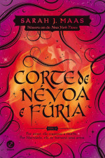

Corte de Espinhos e Rosas
Feyre é uma caçadora. Ela não pensa em matar um lobo para capturar sua presa. Mas, como todos os mortais, ela teme o que permanece além da floresta. E ela aprenderá que tirar a vida de uma criatura mágica tem um preço alto. . .
Livros da Série
Corte de Espinhos e Rosas

Corte de Névoa e Fúria
Corte de Asas e Ruína
Corte de Gelo e Estrelas
Corte de Chamas Prateadas
Resenha:
Ela roubou uma vida. Agora, deve pagar com o coração.
Nesse misto de A bela e a fera e Game of Thrones , Sarah J. Maas cria um universo repleto de ação, intrigas e romance. Depois de anos sendo escravizados pelas fadas, os humanos conseguiram se libertar e, agora, coexistem com os seres místicos. Cerca de cinco séculos após a guerra que definiu o futuro das espécies, Feyre, filha de um casal de mercadores, é forçada a se tornar uma caçadora para ajudar a família, afundada na pobreza. Após matar uma criatura feérica transformada em lobo, uma criatura bestial surge exigindo uma reparação.
Arrastada para uma terra mágica e traiçoeira ― que ela só conhecia através de lendas ―, a jovem descobre que seu captor não é um animal, mas Tamlin, senhor da Corte Feérica da Primavera. À medida que ela descobre mais sobre este mundo onde a magia impera, seus sentimentos por Tamlin passam da mais pura hostilidade até uma paixão avassaladora. Enquanto isso, uma sinistra e antiga sombra avança sobre o mundo das fadas e Feyre deve provar seu amor para detê-la... ou Tamlin e seu povo estarão condenados.